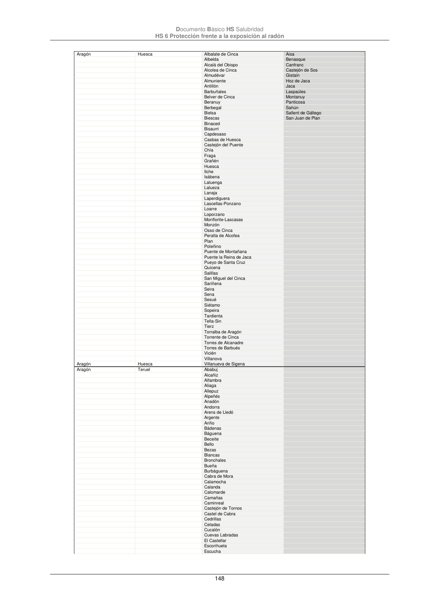

DB-HS Salubridad · edición 2022-06-14 · capa oficial
Documento DB-HS-oficial · SHA-256 del PDF 68df3caacc95f71aee2ec1ba7b2c65ae66155c21e3a8785521b8fdd4fd640d3b
Página física 148 de 184.
Copia fiel del PDF fuente · Fuente oficial
Ficha de la disposición en la fuente oficial
Formato: Texto de la página (Markdown)
Documento Básico HS Salubridad HS 6 Protección frente a la exposición al radón 148 Aragón Huesca Albalate de Cinca Aisa Albelda Benasque Alcalá del Obispo Canfranc Alcolea de Cinca Castejón de Sos Almudévar Gistaín Almuniente Hoz de Jaca Antillón Jaca Barbuñales Laspaúles Belver de Cinca Montanuy Beranuy Panticosa Berbegal Sahún Bielsa Sallent de Gállego Biescas San Juan de Plan Binaced Bisaurri Capdesaso Casbas de Huesca Castejón del Puente Chía Fraga Grañén Huesca Ilche Isábena Laluenga Lalueza Lanaja Laperdiguera Lascellas-Ponzano Loarre Loporzano Monflorite-Lascasas Monzón Osso de Cinca Peralta de Alcofea Plan Poleñino Puente de Montañana Puente la Reina de Jaca Pueyo de Santa Cruz Quicena Salillas San Miguel del Cinca Sariñena Seira Sena Sesué Siétamo Sopeira Tardienta Tella-Sin Tierz Torralba de Aragón Torrente de Cinca Torres de Alcanadre Torres de Barbués Vicién Villanova Aragón Huesca Villanueva de Sigena Aragón Teruel Ababuj Alcañiz Alfambra Aliaga Allepuz Alpeñés Anadón Andorra Arens de Lledó Argente Ariño Bádenas Báguena Beceite Bello Bezas Blancas Bronchales Bueña Burbáguena Cabra de Mora Calamocha Calanda Calomarde Camañas Caminreal Castejón de Tornos Castel de Cabra Cedrillas Celadas Cucalón Cuevas Labradas El Castellar Escorihuela Escucha

Datos candidatos: compruebe celdas y notas en el PDF.